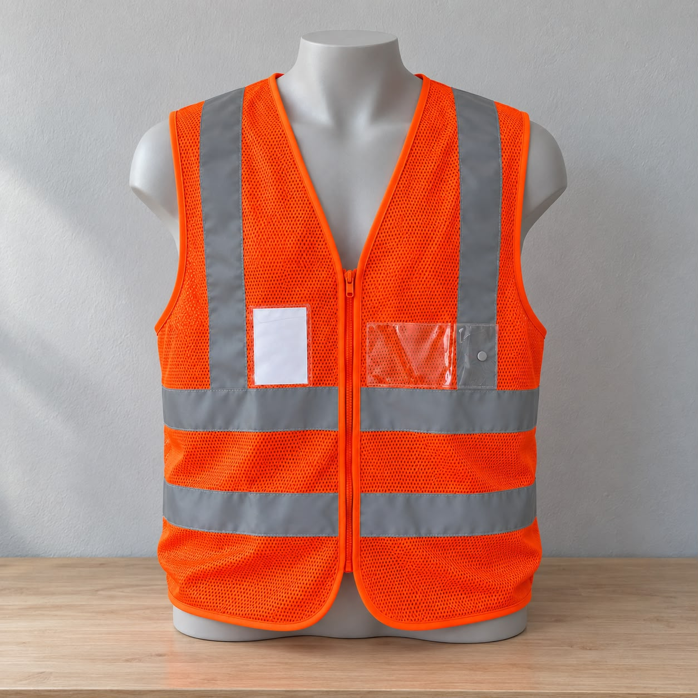
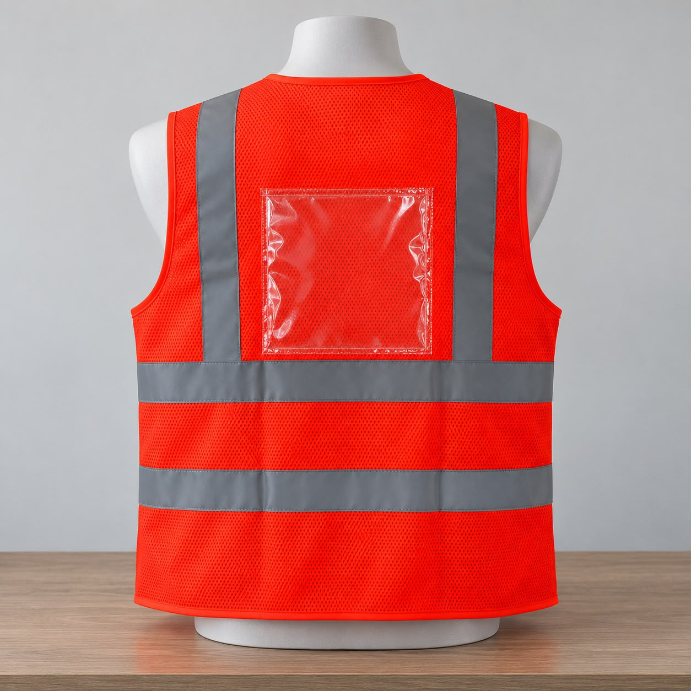
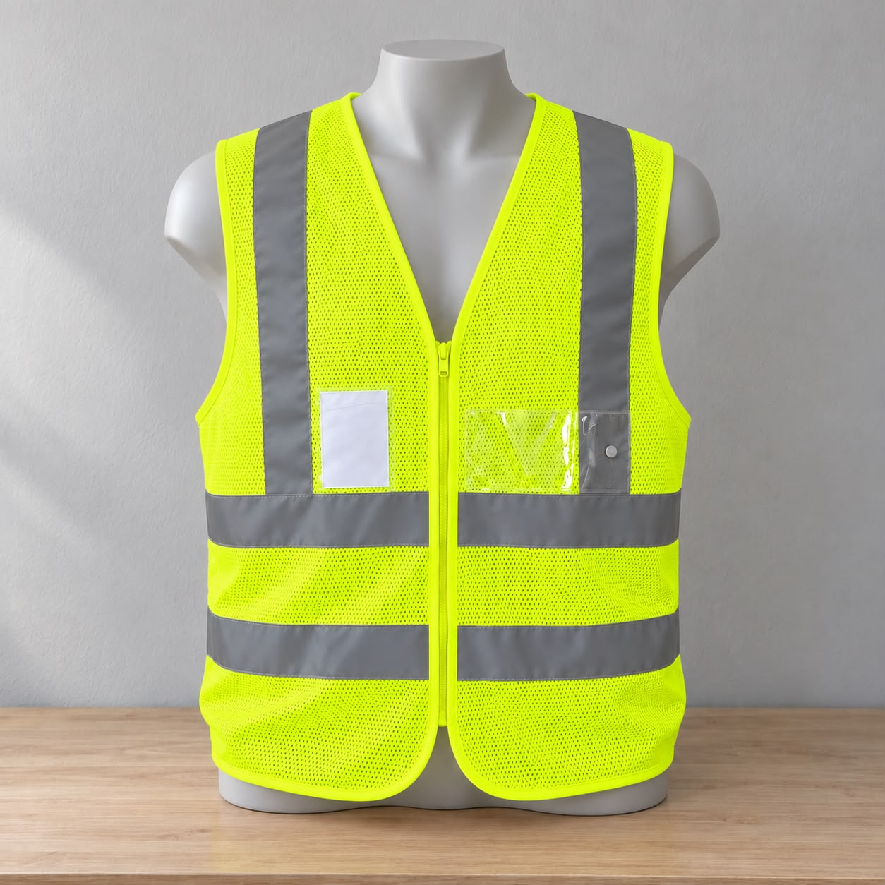
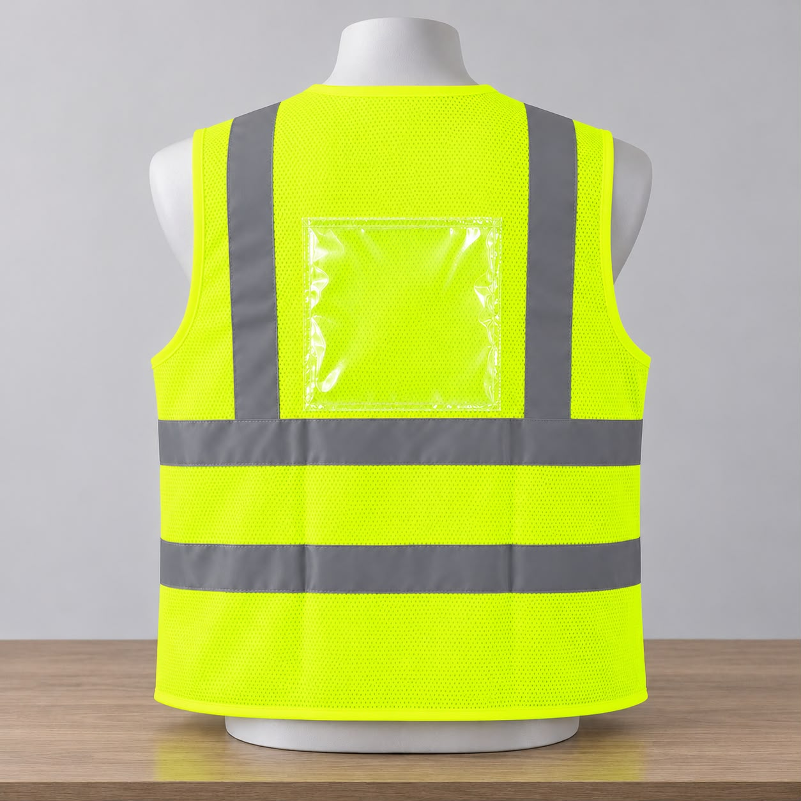

Colete Refletivo Aeroportuário Telado BRASA Mesh
Colete de alta visibilidade confeccionado em tela mesh respirável, ideal para ambientes que exigem segurança, identificação e maior visibilidade do profissional.
Possui faixas refletivas na parte frontal e traseira, fechamento frontal por zíper e bolsos transparentes para identificação, permitindo a utilização de placas personalizadas conforme a necessidade da operação.
A tela vazada proporciona maior ventilação e conforto durante o uso, sendo uma excelente opção para atividades em ambientes externos e operações que exigem o uso contínuo do colete.
- • Tela mesh respirável e leve
- • Cores: amarelo-esverdeado fluorescente e laranja-avermelhado fluorescente
- • Alta visibilidade
- • Faixas refletivas frontais e traseiras
- • Fechamento frontal com zíper
- • Bolso porta-placa na parte frontal e traseira
- • Porta-crachá transparente
- • Disponível nos tamanhos P ao 2XL